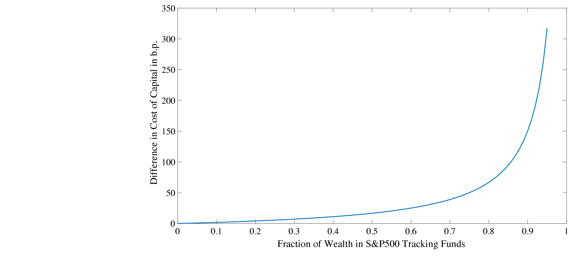
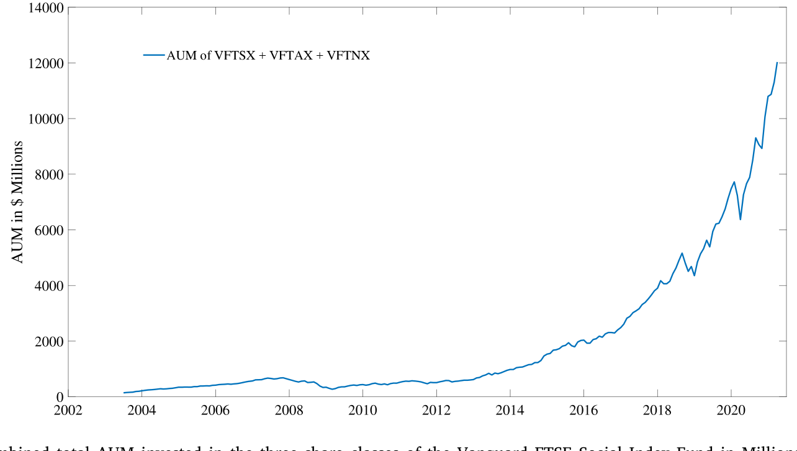
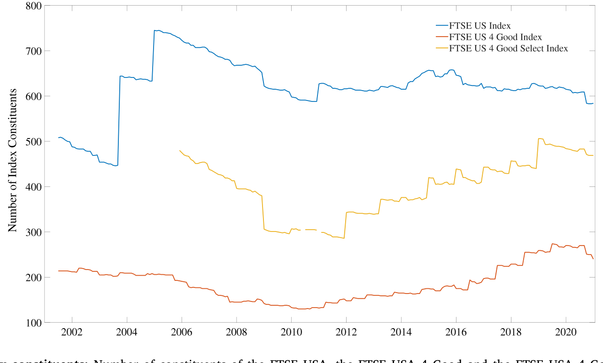
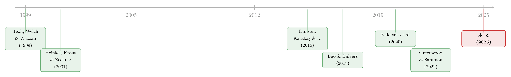

卖掉一只「脏」股票，真能改变世界吗？——给「撤资」算一笔成本的账
本文读的是 Berk & van Binsbergen (2025, JFE)：当你为了社会责任而「卖掉」一只烟草股、煤炭股时，你只是把它换给了另一个并不在乎的买家。作者用一个 CAPM 框架证明，二级市场上的「撤资 (divestment)」对被针对公司资本成本的影响，可以被一个只含三个参数的简单公式逼近；用今天的真实数据校准，这个影响约为 0.44 个基点——小到对企业的投资决策毫无意义。要想真正产生影响，你应该去买入（一级市场）并行使控制权，而不是卖出。
1 一个看似无懈可击、却缺了一环的直觉
社会责任投资的逻辑，乍听上去天衣无缝：如果有良知的投资者集体拒绝持有烟草、化石能源、军火这些「作恶」的公司，社会就会变好。这套说法如此符合直觉，以至于很少有人停下来追问——它中间到底是怎么发生的？
Berk 和 van Binsbergen 在开篇就把这块缺失的拼图摆到了桌面上。当你卖掉一只烟草股，你必然把它卖给了另一个投资者。这笔交易只是把一个股东换成了另一个股东，它本身不可能直接改变公司怎么做生意。换句话说，撤资的全部效果，是把「在乎社会成本的股东」换成了「不在乎的股东」——你凭什么指望后者会比前者更愿意为了社会公益去行使控制权？
于是，撤资若要起作用，就只剩下唯一一条间接通道：通过改变价格、进而改变公司的资本成本 (cost of capital)。当有良知的卖家退出，剩下的买家必须被「诱导」进来接盘，而诱导的方式就是更低的价格；更低的价格意味着更高的资本成本；更高的资本成本会砍掉一部分原本为正的净现值 (net present value, NPV) 项目，从而压低公司的增长。绿色公司则反过来享受更低的资本成本、更快的增长。长期来看，「好公司」在经济中占比上升，社会成本下降。
这条链条没有错。问题在于——它的量级有多大？ 整篇论文，其实就是把这一个问题死死咬住，算到底。
2 把整件事压成一个公式
这篇论文最漂亮的地方，是它没有去搭一个谁也看不懂的复杂模型，而是反其道行之：把撤资对资本成本的影响，压缩成一个你可以在信封背面手算的公式。
在均值—方差 (mean–variance) 偏好这一金融学的「主力机型」假设下，作者证明：如果有良知的投资者盯上的「脏」公司占整个经济的比例为 \(f\)，而这些公司与市场其余部分的收益相关性为 \(\rho\)，那么撤资策略导致的资本成本变化，可以被下面这个式子紧密逼近：
四个因子，每一个都在讲一句大白话。
首先，是市场风险溢价 MRP——你逼别人多持有风险，得给多少补偿，由市场对风险定价的整体水平决定。
接着，是真正掐住命门的两项：\(f\) 和 \((1-\rho^2)\)。\(f\) 衡量「脏」公司在经济中占多大块头；作者用 ESG 共同基金的数据估出 \(f \approx 27\%\)。而 \((1-\rho^2)\) 才是这篇论文的灵魂——它衡量「被撤资的那篮子股票」相对于「市场其余部分」到底有多不可替代。
这里就藏着全文的核心反转：股票是高度可替代的。 被撤资的脏股票，与市场其余部分的相关性 \(\rho\) 高达 0.93。这意味着 \(1-\rho^2 = 1 - 0.865 \approx 0.135\)。当有良知的人退出后，被迫多持有脏股票的买家，他手里的新组合相比旧组合，分散化程度只下降了一丁点——因为脏股票本来就和别的股票涨跌得差不多。既然组合几乎没变差，他要求的额外补偿自然就很小。
然后，再乘上第二项：有社会责任意识的资本，当前还不到美股市值的 2%。
把这些数字代进去——6% × (约2%/98%) × 27% × 0.135——结果是 0.44 个基点。
0.44 个基点是什么概念？在资本预算里，一家公司估算自己项目的折现率时，本身就带着远大于此的不确定性。半个基点的资本成本变化，连测量误差都算不上，更谈不上改变任何一个 NPV 项目的取舍。
这就是全文的支点：不是撤资在原理上无效，而是在今天的参数下，它的量级小到可以忽略。
3 模型：一步步看清「可替代性」如何吞掉了影响
为了让上面那个公式不显得像变魔术，值得把模型的骨架一步步搭一遍。论文从一个无摩擦经济出发，假设资本资产定价模型 (Capital Asset Pricing Model, CAPM) 成立，所有投资者都是均值—方差最大化者：
$$\max\; E[R_p] - k\,\sigma_p^2,$$
其中 \(k\) 衡量投资者的风险偏好，\(\sigma_p^2\) 是组合收益的方差。
作者采用了一个干净的价格归一化：持有全部股票的价格为 1，于是市场组合的收益就是 \(R = D - 1\)，\(D\) 是所有股票期末清算分红的总和。市场被拆成两个组合——满足 ESG 要求的clean（干净）组合，和其余的dirty（脏）组合，二者价值满足
$$V_E + V_D = 1.$$
在归一化下，\(V_E\) 恰好就是干净股票占市值的比例，\(V_D\) 则是脏股票的占比。两个组合的收益分别为
$$R_E = \frac{D_E}{V_E} - 1, \qquad R_D = \frac{D_D}{V_D} - 1,$$
而市场收益是它们的加权合并：\(R = D_E + D_D - 1\)。
接下来定义二阶矩。这里有一个因价格归一化而来的巧妙之处——市场的现金流方差恰好等于其收益方差，而且脏、干净两组之间的现金流相关性也恰好等于收益相关性：
$$\rho \;\equiv\; \frac{\sigma_{ED}}{\sigma_D \,\sigma_E} \;=\; \frac{\operatorname{cov}(R_E, R_D)}{\operatorname{std}(R_D)\,\operatorname{std}(R_E)}.$$
但真正关键的一步，在于约束。 ESG 投资者的总财富记为 \(\gamma\)（占归一化后总财富的比例），他们拒绝持有任何脏股票。于是他们只能在「只含干净股票」的受约束有效前沿上，持有干净股票的切点组合。设他们持有干净组合的比例为 \(e\)，预算约束给出
$$\gamma = V_E\, e + b \quad\Longrightarrow\quad e = \frac{\gamma - b}{V_E},$$
其中 \(b\) 是 ESG 投资者投在无风险资产上的财富（相应地，其余投资者投 \(-b\)）。
这一步的经济含义至关重要：因为 ESG 投资者被约束了，给资产定价的就不再是他们，而是剩下的那群「不在乎」的投资者。 这群人现在必须吸收掉 ESG 投资者腾出来的全部脏股票，他们的风险资产组合权重变成
$$\omega_D = \frac{V_D}{V_D + (1-e)V_E}.$$
直觉到这里就完全显形了：撤资的本质，是逼着「不在乎的投资者」去持有一个比市场组合更集中于脏股票的组合。这让他们偏离了完全分散化，理应索取补偿——补偿的大小，正比于他们被迫承担的「额外不分散」。而这个「额外不分散」有多大？它取决于脏股票占多少（\(f\)）、以及脏股票和别的股票有多像（\(\rho\)）。当 \(\rho\) 高达 0.93、\(f\) 只有 27% 时，新组合相比旧组合几乎没差，补偿微乎其微。
公式里的 \((1-\rho^2)\)，就是这套逻辑最后凝结出的那一滴。

Figure 3: plots the effect of the cost of capital as a function of 𝛾 (the
如图 3 所示，作者把资本成本的变化画成了社会责任资本占比 \(\gamma\) 的函数。曲线在 \(\gamma\) 很小的区间里几乎贴着零——这正是我们今天所处的位置（不到 2%）。只有当 \(\gamma\) 被推到极高，曲线才陡峭起来。
4 那要多大才「够」？一个令人沮丧的门槛
于是，一个自然的问题是： 既然现在不够，那要多少才够？
作者把公式倒过来解。结论冷峻得近乎残酷：
- 要让资本成本产生超过 1%（100 个基点）的变化，影响投资者必须占到全部可投资财富的 80% 以上。
- 如果换一个角度，担心有大量「被动买入持有、不参与定价」的受约束投资者会放大效果——那么在当前 ESG 参与率下，要产生 1% 的资本成本效应，需要 98% 的投资者都被这样约束住。
这两个数字都高得不切实际。换句话说，撤资不是「现在还差一点」，而是「在可见的未来都差得很远」。
这也顺带回答了一个长期困扰文献的悖论：为什么二级市场撤资如此无力，但指数纳入/剔除的研究又总能测到看似可观的价格变动？作者的回答是：资本成本是一个长期利率，只有价格的永久成分才会影响它；而文献里记录的需求效应大多是暂时的，会在不长的时间内均值回归（Harris and Gurel, 1986）。Greenwood and Sammon (2022) 发现，近十年标普 500 的纳入价格效应已降至约 0.3%——作者校准模型后表明，这个数量级与他们模型隐含的需求弹性完全自洽。（关于「指数究竟是不是被动的镜子」，可参见《你以为买的是「整个市场」，其实买的是一套交易规则》。）
5 数据与识别：一场「自然实验」般的检验
理论说影响约等于零，接着就该让数据说话。这里，作者设计了一个相当干净的检验。
他们利用一只股票被纳入或被剔除 FTSE USA 4 Good Select Index 这一事件。这个指数是 FTSE USA Index 的子集，纳入/剔除完全由公司 ESG 状态的变化驱动；更妙的是，这个指数被全球最大的社会责任指数基金——Vanguard FTSE Social Index Fund——所复制。于是当一家公司 ESG 状态变化、被指数调入或调出时，就会触发一笔真实的、有规模的指数基金交易。

Figure 1: Combined total AUM invested in the three share classes of the Vanguard FTSE Social Index Fund in Millions of dollars
如图 1 所示，这只 Vanguard 基金的资产规模在过去十余年里大幅增长——impact investing 不再是襁褓中的婴儿，正是检验其「真实影响」的好时机。
这个识别策略的精妙之处在于：它不需要对风险模型表态。 传统「罪恶股 (sin stock)」研究的死结是，烟草、酒精、博彩这些股票高度集中在少数行业，本就可能有基于风险的理由获得不同于市场的收益——所谓的「罪恶溢价」很可能只是没被正确调整的风险（Blitz and Fabozzi, 2017）。而本文只需要一个弱得多的假设：公司决定改变其社会政策这件事，与公司风险的变化不相关。 此外，用政策变化引发的价格反应来度量资本成本效应，比去测量那个伴生的、淹没在噪声里的预期收益变化，要容易得多。

Figure 4: FTSE index constituents:Number of constituents of the FTSE USA, the FTSE USA 4 Good and the FTSE USA 4 Good Select Indices
如图 4 所示，FTSE USA、FTSE USA 4 Good 与 4 Good Select 三个指数的成分股数量差异，正是这场「ESG 准入/退出」实验的舞台。
结果呢？ 被针对公司（因社会或环境成本被剔除）与未被针对公司之间的资本成本差异，很小、且在统计上与零无法区分。理论预言的「几乎没有影响」，在数据里得到了印证。
6 那么，正确的姿势是什么？
如果卖出无效，那什么有效？这正是论文标题里「impact」一词的双关落点。
作者的答案是：去买入，而不是卖出。 而且要区分两个市场。
在二级市场，你高价接盘也好、低价抛售也罢，多出来的价值都只是流向了交易对手，对公司的投资决策没有直接影响——影响有多大，取决于「其他投资者」如何反应，而股票的高度可替代性保证了这种反应会迅速把价格效应抹平。
但在一级市场，逻辑完全翻转。如果一个投资者选择去资助一个本来无人问津的、负 NPV 但有社会价值的项目，其他投资者的反应就无关紧要了——因为没有别人会去抢一个负 NPV 的项目。正因如此，在一级市场实现社会变革所需的参与度，远低于二级市场。
还有一条更直接的路：不要撤资，而要持股并行使控制权。 通过在「作恶」公司里持有实质性的股权，有良知的投资者可以借助代理投票、甚至取得多数股权更换管理层来推动改变。Dimson, Karakaş and Li (2015) 的「积极所有权 (active ownership)」就提供了这条路有效的实证证据。而且作者估计，所有社会责任基金针对的公司加起来只占市场的 27%——这意味着，实施「投资+控制」策略所需的财富比例，反而远小于撤资策略所需的比例。（关于良知投资如何真实地改变——或可能意外地恶化——公司行为，可参见《良心能改变公司吗？——社会偏好、协调，与那场可能走反的「绿色转型」》。）
7 文献脉络
把这篇论文放回它所在的谱系里，能更清楚地看到它在「拨乱反正」。
早期，撤资的实证证据本就暧昧。Teoh, Welch and Wazzan (1999) 研究南非种族隔离时期的撤资运动，没能检测到任何效果——这几乎是这条线的起点。此后一批研究记录了持有「罪恶股」的超额收益（Hong and Kacperczyk, 2009 等），暗示撤资或许真的抬高了这些股票的收益；但更晚近的工作又给出相反结论，争论始终未息。
然后，理论开始介入。Heinkel, Kraus and Zechner (2001) 第一次正式建模撤资如何影响公司行为，给出了一个丰富的均衡，但代价是缺乏简洁的刻画——更要命的是，其数值算例为了「最好地展示权衡」而选取参数，让后来者误以为资本成本的影响大到足以驱动大量公司转绿。本文作者一针见血地指出：在那篇论文写就时，impact investing 尚在萌芽，根本没有恰当校准模型所需的数据。

接着，一批 ESG 均衡模型涌现——Pedersen et al. (2020)、Pástor et al. (2020) 等刻画了带 ESG 偏好投资者的均衡，但大多聚焦于组合选择或证券市场线，并未正面评估「引入 ESG 投资者对资本成本的量级影响」。Luo and Balvers (2017) 在单期均值—方差框架下推导出一个「抵制因子」溢价，并估计其高达每年 16%——本文作者认为这个偏大的估计更可能是样本期与罪恶行业选择的产物，而非 ESG 偏好的普遍效应。
而本文所处的位置，恰恰是用「多积累了二十年」的数据，回头给这整条脉络做一次冷静的量化校准，并把结论引向一级市场与控制权——这也呼应了 Broccardo et al. (2020) 关于「退出 (exit) vs. 发声 (voice)」、以及 Oehmke and Opp (2023) 关于一级市场竞争的洞见。
8 评论与延伸（Q&A + 研究方向）
(a) 几个可能的疑问
Q：这和「ESG 投资没有收益代价」是一回事吗？
不是。本文谈的是撤资对被针对公司资本成本（即对企业真实投资的影响）的效应，而不是 ESG 投资者自己赚多少。两者是同一枚硬币的两面：正因为撤资几乎不改变价格，所以它既没给企业带来痛感，通常也没给撤资者带来可观的收益或损失。
Q：\((1-\rho^2)\) 这一项凭什么这么重要？
它度量「被撤资的篮子」相对于市场其余部分有多不可替代。\(\rho\) 越高，脏股票越像别的股票，被迫接盘的人组合变差得越少、索取的补偿越低。\(\rho = 0.93\) 意味着 \(1-\rho^2 \approx 0.135\)——一个把影响直接打到「零头」的乘数。这是全文的题眼。
Q：只考虑「极端拒绝持有」会不会高估、还是低估了效应？
高估。作者刻意只建模最极端的情形——ESG 投资者完全拒绝持有任何脏股票，而非温和地「倾斜 (tilt)」。所以他们的结果是带有「Warm Glow」偏好投资者效应的上界。连上界都只有 0.44 个基点，温和版本只会更小。（关于真实世界里 ESG 资金到底「倾斜」了多少，可参见《三万五千亿美元的 ESG，到底「倾斜」了多少？》。）
Q：只看股权市场，会不会漏掉了债务这条通道？
作者明确承认只考虑了股权市场，并指出这同样让结果成为上界：公司还有公司债、银行贷款、内部资金等多个融资边际，把这些纳入只会进一步稀释股权撤资的效果。换句话说，加上债券市场，撤资只会显得更无力。
Q：指数研究测到的大价格效应，不是和本文矛盾吗？
不矛盾。资本成本是长期利率，只有价格的永久成分才影响它；而文献里的需求效应大多是暂时的、会均值回归（Harris and Gurel, 1986）。作者校准后表明，Greenwood and Sammon (2022) 那
0.3%的近期指数效应，与本文模型隐含的需求弹性完全一致。
Q：那为什么还有这么多人热衷于撤资？
论文给了两种可能：一是投资者并不知道（或不在乎）这个策略无效，单纯从撤资行为本身获得效用；二是用撤资来发信号、彰显「好行为」。Riedl and Smeets (2017) 的证据支持后一种解释。
(b) 几个可能的研究问题与提案
1. 把这套「可替代性」框架搬到公司债市场
【经济故事】本文的核心乘数 \((1-\rho^2)\) 讲的是「被撤资资产有多不可替代」。公司债的横截面相关性结构与股票截然不同——同一发行人不同期限、同评级不同行业之间的替代弹性差异极大。若把模型移植到信用市场，被撤资的「棕色债券」可能远没有股票那么可替代，撤资的资本成本效应或许会被放大。 【可行性】中。需要 TRACE 成交数据与债券层面 ESG/绿色标签，识别上可借鉴本文的「ESG 状态变化」事件法。难点在于估计债券间的真实相关性结构与流动性调整。
2. 外资持有人的「撤资」是否更有牙齿？
【经济故事】本文假设接盘者是无差别的「不在乎者」。但如果被撤资公司高度依赖外资这一特定边际买家，撤资就可能不再是简单的股东互换，而是抽走一类难以替代的资本，从而让 \((1-\rho^2)\) 的逻辑失效。外资在新兴市场公司债中的边际定价地位，正是检验这一点的好场景。 【可行性】中。需跨境持仓数据（如 TIC、ECB SHS）匹配发行人层面 ESG 事件。识别可用资本流动突变或制裁/ESG 监管冲击作为外资撤离的外生来源。
3. 撤资的「流动性」副作用
【经济故事】本文只盯资本成本（折现率的永久成分），但撤资还可能改变被针对股票的流动性——交易者基础变薄、做市更难。即便资本成本几乎不动，流动性溢价的变化也可能独立地影响企业融资成本。 【可行性】高。FTSE 4 Good Select 的纳入/剔除事件天然提供识别，配合买卖价差、Amihud 非流动性等指标做事件研究即可，数据现成。
4. 「投资+控制权」路径的量化检验
【经济故事】作者主张「持股并发声」比撤资有效，但这一主张在论文里主要是理论与引证（Dimson et al., 2015）。一个自然的实证问题是：当社会责任基金从「剔除」转向「持有并提交 ESG 提案」时，被针对公司的真实政策（排放、治理）是否真的改变？ 【可行性】中。需要代理投票记录（ISS）、ESG 提案数据与公司层面环境/治理产出。识别难点在于基金「选择持有」本身的内生性，可考虑用被动指数基金的机械持仓作为工具。
5. 跨指数稳健性：不同 ESG 体系，不同 \(f\) 与 \(\rho\)
【经济故事】不同 ESG 评级体系（MSCI、Sustainalytics、FTSE）对「脏」的界定差异巨大，意味着 \(f\) 和 \(\rho\) 在不同体系下取值不同。把本文公式逐一校准到各体系，可以画出一张「撤资影响的敏感性地图」，看结论在多大范围内稳健。作者已对 MSCI ESG Aware 做过、得到定量相似的结果，但系统性的横向比较仍是空白。 【可行性】高。所需的是多家评级数据与指数成分，纯校准练习，doable。
9 我的判断
这篇论文的贡献，在我看来不在于「发现了一个新效应」，而在于用一个谁都能复算的公式，给一个被情绪和叙事裹挟的领域装上了一把尺子。 把撤资的全部威力压缩成 MRP × 财富比 × f × (1−ρ²)，再用真实数据读出 0.44 个基点——这种「信封背面」的清醒，正是好金融学的样子。它也漂亮地化解了与指数效应文献的表面矛盾：永久 vs. 暂时、资本成本 vs. 价格冲击。
对识别，我有两点保留。其一，实证部分依赖「公司改变社会政策与其风险变化不相关」这一假设——这比传统「罪恶溢价」研究的风险模型假设弱得多，但并非没有代价：ESG 状态的变化（比如一家公司被剔除）很可能恰恰发生在其基本面或风险特征转变之时，二者未必正交。其二，「测不到效应」与「效应为零」之间隔着检验功效 (power) 的鸿沟——半个基点本就在任何合理样本的分辨率之下，所以实证更像是「与理论一致」，而非对理论的强检验。
后续我最想看到的，是把这套框架推到债券与外资这两个本文刻意留白的边际上。作者反复强调，纳入债务市场、纳入更多接盘渠道，只会让撤资更无力——这是一个可被直接证伪的预言。如果在某个被特定买家（外资、特定机构）主导定价的细分市场里，撤资的资本成本效应没有如预言般衰减，那将是对「股票高度可替代」这一全文支柱最有意思的反例。在那之前，这篇论文给所有真心想用钱改变世界的人留下一句务实的忠告：别只是卖掉它——买下它，然后投票。
参考文献
- Berk, Jonathan B., van Binsbergen, Jules H. (2025). The impact of impact investing. Journal of Financial Economics 164, 103972.
- Broccardo, Eleonora, Hart, Oliver, Zingales, Luigi (2020). Exit versus voice. Working paper.
- Dimson, Elroy, Karakaş, Oğuzhan, Li, Xi (2015). Active ownership. Review of Financial Studies 28(12), 3225–3268.
- Greenwood, Robin, Sammon, Marco C. (2022). The disappearing index effect. NBER Working Paper.
- Harris, Lawrence, Gurel, Eitan (1986). Price and volume effects associated with changes in the S&P 500 list: New evidence for the existence of price pressures. Journal of Finance 41(4), 815–829.
- Heinkel, Robert, Kraus, Alan, Zechner, Josef (2001). The effect of green investment on corporate behavior. Journal of Financial and Quantitative Analysis 36(4), 431–449.
- Luo, H. Arthur, Balvers, Ronald J. (2017). Social screens and systematic investor boycott risk. Journal of Financial and Quantitative Analysis.
- Riedl, Arno, Smeets, Paul (2017). Why do investors hold socially responsible mutual funds? Journal of Finance 72(6), 2505–2550.
- Shleifer, Andrei (1986). Do demand curves for stocks slope down? Journal of Finance 41(3), 579–590.
- Teoh, Siew Hong, Welch, Ivo, Wazzan, C. Paul (1999). The effect of socially activist investment policies on the financial markets: Evidence from the South African boycott. Journal of Business 72(1), 35–89.